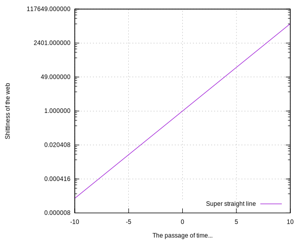
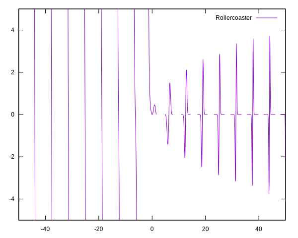
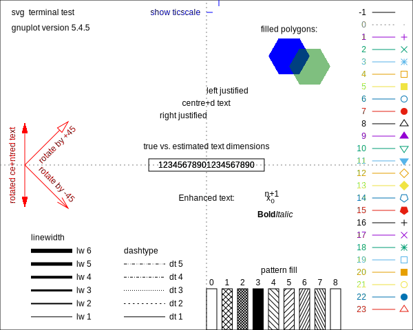
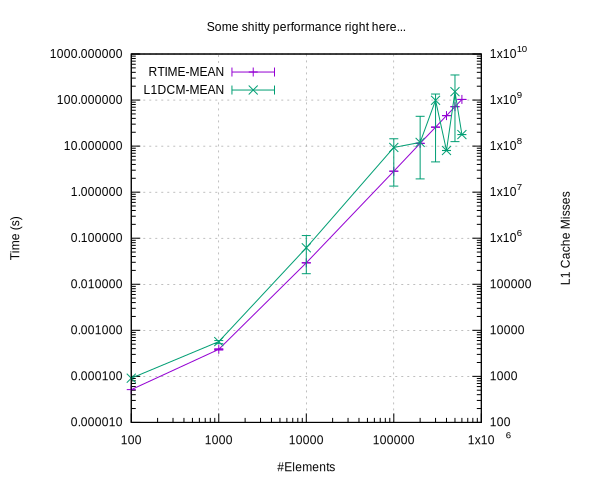

siiky 2022/01/12 2022/07/14
I started learning Gnuplot for a PA because I didn't want to deal with Python BS or whatnot, and Gnuplot has been around since like... even before the dinosaurs were invented, so it must be super specialized for this kinda thing, and it must be pretty good right?
Hopefully I'll document well enough the things I've learned these past few days, for posterity or someone else. I've been using it to plot 2D graphs of recorded data, not functions/expressions, so my focus will be on that.
Gnuplot files don't have a "standard" file extension, but some common ones seem to be .gp, .plot, .gnu, .gnuplot, .plt. I've been using .gp and will use .gp here.
To run Gnuplot scripts, just call gnuplot script.gp. It's possible to pass arguments to the script by using the -c flag: gnuplot -c script.gp arg1 arg2 etc. And inside the script the arguments are available as the variables ARG1, ARG2, etc. As is common on other programming languages, ARG0 is the script name. I don't know if there are, or what are the limits on the number of arguments, nor how to loop through them, but I'm guessing it's possible.
Now let's get going with some Gnuplot code. I said the focus would be on plotting datafiles, so let's start with expressions:
# The output "format".
set terminal svg
# The output file.
set output "exp.svg"
# Enable gridlines.
set grid
# Where to place the lines/points/&c legend.
set key right bottom
# Legend of the XX/YY axes.
set xlabel "The passage of time..."
set ylabel "Shittiness of the web"
# Mirror or not the axes' tics -- notice the YY axis has tics on both the left
# and right, but the XX axis has only on the bottom, not the top.
set ytics mirror
set xtics nomirror
# Use a logscale of base 7 for the XX axis -- the base is optional and defaults
# to 10 I think.
set logscale y 7
# The actual plot: `exp(x)` is the expression to plot; `x` is "special" --
# there are a few different variables you can use, but they seem to depend on
# the available axes/dimensions, but I don't know details of this so RTFM.
#
# `title "..."` sets this line's legend.
plot exp(x) title "Super straight line"

Notice how it starts to grow really fucking quick after t=5 -- right after HTML was invented.
Here's another one:
set terminal svg
set output "rollercoaster.svg"
# The number of samples to use to plot the expression.
set samples 1000
# The ranges here specify the XX and YY ranges respectively.
plot [-50:50] [-5:5] x*sin(x)*cos(x)**x title "Rollercoaster"

The website, with documentation and all (including a 300+ pages PDF of all the documentation, with proper PDF index!):
The first seems to be the "official" one, but is sometimes offline? The second looks like a mirror.
You can use the help command to read the documentation inside the Gnuplot REPL too.
An important concept is that of the terminal, as seen above being set to SVG. It's nothing but an "output backend", and Gnuplot has tons of those -- run set terminal and see for yourself; there's even one to output ASCII art to the terminal! Different terminals may have different specific options -- RTFM for those.
Once you start messing around with line styles, line types, colors, and whatnot, it's helpful to know what the valid values are. For that use the test command after setting the terminal (the result of the test command varies depending on the terminal, so it's important to set it):
set terminal svg
set output "gnuplot-test.svg"
test

Variables are a thing, and you can define them just as you'd expect:
some_var = 42
To plot data from files just pass the filename to plot:
plot "/path/to/file.tsv" # ...
Gnuplot is supposed to support many different formats but I don't know details here. I've been using TSV because it makes sense. For tabular data files (TSV, CSV, ...), this may be useful:
set datafile separator tab
RTFM for details: help set datafile separator.
It's possible to define datasets inside a Gnuplot script, too, like this:
plot "-"
1 2
3 4
5 6
7 8
9 0
e
Notice the e at the end! You can even define more than one for the same plot command:
plot "-", "-"
1 2
3 4
5 6
7 8
9 0
e
2 1
4 3
6 5
8 7
0 9
e
Another arguably more useful way is to do it like so (notice the dollar!):
$SomeData << EOD
1 2
4 5
7 8
EOD
plot $SomeData # ...
This kind of inline data definition doesn't seem to work on the REPL though... At least I couldn't make it work.
For tabular data files, files may have many columns, some that you want, some that you don't, some that are in the wrong order... To solve that, you use using:
plot "-" using 1:3
1 2 3
4 5 6
7 8 9
The above uses the first and third columns of the dataset.
And with that, if you want to plot several graphs from the same dataset, you can do it like so:
plot "/path/to/file.tsv" using 1:3, "" using 1:4
Assuming the data file has at least 4 columns, the above will plot a line/w.e. using the first and third columns, and then another using the first and fourth columns. The empty string there is a shortcut to mean "the previous dataset/file".
For certain plot types, such as for errorlines or errorbars, you may want or need to use more than 2 columns of data.
And a final plot, pretty much the most advanced I can get right now. The dataset's fields are separated by tabs but your browser or something may present them as spaces, so download the file for greater €€€profit€€€.
$Dataset << EOD
NELEMS RTIME-MEAN RTIME-MIN RTIME-MAX TOTCYC-MEAN TOTCYC-MIN TOTCYC-MAX TOTINS-MEAN TOTINS-MIN TOTINS-MAX L1DCM-MEAN L1DCM-MIN L1DCM-MAX L2DCM-MEAN L2DCM-MIN L2DCM-MAX
100 51.5 51 52 153107.0 151836 154378 49774.5 42768 56781 912.5 849 976 557.0 528 586
1000 386.4 373 396 1117484.4 1076454 1145864 652026.8 634123 680188 5681.0 5118 5990 1660.4 1300 1793
10000 29215.8 29061 29364 21425394.0 10119054 26280869 15941285.8 6979549 22139082 619685.8 169351 1140152 298639.6 17765 644415
100000 2852669.8 2845788 2859074 708231510.6 119757602 1080138950 1145341284.8 184498435 1753956316 93553900.2 13537085 144424582 72470004.8 2110199 120731566
200000 11472829.2 11426994 11502233 922765811.8 181797852 3298279336 1480628498.6 268678225 5359163617 120437869.6 19420767 444041994 87885551.2 2726575 385487784
300000 25821154.8 25729787 25883755 7291510319.0 393353142 9962527951 11904840316.2 594020363 16257913776 988685146.8 45337229 1351805549 907188629.2 12260881 1258022140
400000 45910144.6 45833530 46047114 680904937.0 670501982 689922089 1033095368.6 1029084389 1038083524 80272464.4 80011372 80610671 30805397.6 29580829 32181760
500000 71859779.2 71703444 72007099 11187695199.8 1031362427 25645713435 18329461121.4 1586757574 42172405522 1521273469.8 125041982 3509799991 1394315157.4 56848580 3340745801
600000 103237386.5 103196178 103278595 1492849041.0 1484306515 1501391567 2238479602.0 2234440484 2242518720 177991124.0 177535409 178446839 93661585.0 93119294 94203876
EOD
set terminal svg
set output "errorlines.svg"
# Tell Gnuplot that fields are separated by a tab, as briefly mentioned before.
set datafile separator tab
set title "Some shitty performance right here..."
set key left top
# Ask Gnuplot to use log scales for the XX, YY, and YY2 (right side) axes.
set logscale xyy2 10
set xtics nomirror
set ytics nomirror
set y2tics nomirror
set xlabel "#Elements"
set ylabel "Time (s)"
set y2label "L1 Cache Misses"
set grid
# The `($n/1000000)` syntax asks Gnuplot to divide the values of the field `n`
# by 1000000 (in this case, the time is in microseconds, so dividing by
# 1000000 converts to seconds).
#
# `with yerrorlines` changes the style of plot, in this case lines with error
# bars. `yerrorbars` is the same but without the connecting lines.
# Other common styles are `points` (the default?), `lines`, & `linespoints`.
# RTFM for more: `help with`.
#
# The `yerrorlines` style requires additional values. There are some different
# alternatives (RTFM), but in this case the columns are x:y:ymin:ymax. In
# this dataset I've used the mean for the YY, but you may use whatever you
# wish.
#
# `title columnheader` asks Gnuplot to automatically read the given line's
# legend from the input dataset. Note that Gnuplot supports some LaTeX-like
# formatting syntax for text. E.g., the text "RTIME_MEAN" would be rendered
# as "RTIMEMEAN" with the the "M" of "MEAN" in subscript.
#
# Finally, `axis x1y1` & `axis x1y2` set the axes the data should be plotted in
# -- x1 & x2 for bottom & top XX respectively; y1 & y2 for left & right YY
# respectively.
plot $Dataset using 1:($2/1000000):($3/1000000):($4/1000000) with yerrorlines title columnheader axis x1y1,\
"" using 1:11:12:13 with yerrorlines title columnheader axis x1y2

Just a couple of notes on security, especially for someone wanting to develop an interface library. These are things that may be useful when writing and running scripts directly in Gnuplot, but that are a security nightmare if left as something to think about tomorrow.
system() a la C is a thing!
And so are backticks like in shell languages! The first line of the following Gnuplot code runs the echo command, but the second one doesn't:
"`echo hello from Gnuplot`"
'`echo hello from Gnuplot`'